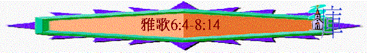

|
引言 |
看重的愛 |
同在的愛 |
甘甜的愛 |
等待的愛 |
同享的愛 |
超越的愛 |
雙向的愛 |
堅強的愛 |
保護的愛 |
結語 |
|
|
1:1-4 |
1:5-11 |
1:12-17 |
2:1-6 |
2:7-3:5 |
3:6-5:1 |
5:2-6:3 |
6:4-8:5 |
8:6-7 |
8:8-12 |
8:13-14 |
|
七.雙向的愛(6:4-8:5)
〜很多愛情都有欠缺的地方，是單方面、單向的，某一方有主動，有付出，有踏上，但另一方面卻沒有；在前面的幾段中，大部份付出及主動者都是良人，有時佳偶是沒有即時回應的。
〜但此段卻不同，我們看到很多雙方傾慕及佳偶終於自願主動付出的一面，真正能體會雙向之愛的美麗！
1.愛慕對方
「不知不覺，我的心將我安置在我尊長的車中。（耶路撒冷的眾女子）」6:12
「我屬我的良人，他也戀慕我。」7:10
A.良人戀慕佳偶
a.因佳偶而讚嘆
(1)讚嘆其美麗
(A)本身美麗
「我的佳偶啊，你美麗如得撒，秀美如耶路撒冷，威武如展開旌旗的軍隊。」6:4
〜「得撒」北國第一個京城，風景美麗，「耶路撒冷」是猶大的京都，建造秀美，用秀美的京城形容佳偶的美麗。
(B)牙齒純全
「你的牙齒如一群母羊洗淨上來，個個都有雙生，沒有一隻喪掉子的。」6:6
(C)前額潤紅
「你的兩太陽在帕子內，如同一塊石榴。」6:7
〜「太陽」指前額
(D)腳腿美好
「女啊，你的腳在鞋中何其美好！你的大腿圓潤，好像美玉，是巧匠的手做成的。」7:1
(E)肚腰均衡
「你的肚臍如圓杯，不缺調和的酒；你的腰如一堆麥子，周圍有百合花。」7:2
〜肚腰如「不缺調和的酒」之杯及麥子般沒有缺少，不平均不足夠的情況出現。
〜也如「百合花」般秀美。
(F)兩乳嬌嫩
「你的兩乳好像一對小鹿，就是母鹿雙生的。」7:3
(G)頸項高貴
「你的頸項如象牙臺；你的眼目像希實本、巴特拉併門旁的水池；你的鼻子彷彿朝大馬色的利巴嫩塔。」7:4
〜「象牙臺」----只有君王及高貴的人才配得上牙象臺
(H)眼睛明亮
〜「希實本」是西宏王的首都，該城有許多泉水；而「巴特拉併」意為大屋。
(I)鼻子筆挺
〜「利巴嫩塔」或作「利巴嫩山峰」比喻為挺真
(J)頭髮厚潤
「你的頭在你身上好像迦密山；你頭上的髮是紫黑色；王的心因這下垂的髮綹繫住了。」7:5
〜「迦密山」樹林茂密之山，比喻為厚密，頭髮是「紫黑色」代表里中有光澤。
〜良人因佳偶的美麗而感到讚嘆----「我所愛的，你何其美好」！
(2)讚嘆其威武
「我的佳偶啊，你美麗如得撒，秀美如耶路撒冷，威武如展開旌旗的軍隊。」6:4
「那向外觀看、如晨光發現、美麗如月亮、皎潔如日頭、威武如展開旌旗軍隊的是誰呢？」6:10
〜佳偶不單美麗，她也有作為「王女」，王所愛之人的威武及高貴，如展開旌旗的軍隊人，有令人感到高貴，威榮的一面。
(3)讚嘆其獨特
「有六十王后八十妃嬪，並有無數的童女。我的鴿子，我的完全人，只有這一個是他母親獨生的，是生養他者所寶愛的。眾女子見了就稱他有福；王后妃嬪見了也讚美他。」6:8-9
〜所羅門雖有很多妃嬪，但唯獨佳偶是最完全，他眼中最美麗的。
(4)旁人也肯定
「我的鴿子，我的完全人，只有這一個是他母親獨生的，是生養他者所寶愛的。眾女子見了就稱他有福；王后妃嬪見了也讚美他。」6:9(良人說的)
「回來，回來，書拉密女；你回來，你回來，使我們得觀看你。（新娘）你們為何要觀看書拉密女，像觀看瑪哈念跳舞的呢？」6:13
〜不單良人覺得她美麗，旁邊的女子，其他人也稱讚，也肯定，甚至受吸引，願女子回來，他們能觀看她。
〜「書拉密女」一名從「書念」而來(王上1:4)
〜「瑪哈念跳舞」可能是當時一種優美的舞蹈，瑪哈念在迦得支派屬地邊境，他們看見佳偶時，如看見獨特舞蹈的雀躍。
b.因佳偶而驚亂
「求你掉轉眼目不看我，因你的眼目使我驚亂。你的頭髮如同山羊群臥在基列山旁。」6:5
「．．．王的心因這下垂的髮綹繫住了。」7:5
〜良人已深被佳偶的吸引而傾慕她，稍為看到她的眼神，已受驚亂，正如很多初戀情人，也因見到對方，而不其然有一種難以理解，不受控制，意亂情迷的感覺！
～王的心也因佳偶而繫住了！
c.因佳偶而歡樂
「我所愛的，你何其美好！何其可悅，使人歡暢喜樂！你的身量好像棕樹；你的兩乳如同其上的果子，纍纍下垂。我說：我要上這棕樹，抓住枝子。願你的兩乳好像葡萄纍纍下垂，你鼻子的氣味香如蘋果；你的口如上好的酒。（新娘）女子說：為我的良人下咽舒暢，流入睡覺人的嘴中。」7:6-9
〜佳偶令良人感到快樂，也從身體接觸中得著滿足。
B.佳偶心繫良人
a.不自覺的傾慕
「我下入核桃園，要看谷中青綠的植物，要看葡萄發芽沒有，石榴開花沒有。不知不覺，我的心將我安置在我尊長的車中。（耶路撒冷的眾女子）」6:11-12
〜原本佳偶比較被動的，但當她下入園子時，不知不覺發現原來自己的心是想著對方，想著與對方(尊長)在車中
b.很自然的跟隨
「回來，回來，書拉密女；你回來，你回來，使我們得觀看你。（新娘）你們為何要觀看書拉密女，像觀看瑪哈念跳舞的呢？」6:13
〜眾人叫佳偶回來給他們觀賞，但佳偶的心已放在良人上，很自然地跟隨良人。
2.踏出一步
〜愛情的吸引，令到佳偶不像以前那般，在推右唐，乃是甘願自發在愛情路上踏出一步，更願付出，更願踏上！
A.甘願同行
「我良人對我說：（新郎）我的佳偶，我的美人，起來，與我同去！」2:10
「我的良人，來吧！你我可以往田間去；你我可以在村莊住宿。」7:11
〜之前是良人呼求佳偶與他同行，但此次是佳偶主動要求良人「來罷」，他們可一同往田間，園子工作及觀賞。
B.付出愛情
「我們早晨起來往葡萄園去，看看葡萄發芽開花沒有，石榴放蕊沒有；我在那裡要將我的愛情給你。」7:12
〜再不是良人單方面付出，佳偶也願付出自己的愛情來！
C.存留上好
「風茄放香，在我們的門內有各樣新陳佳美的果子；我的良人，這都是我為你存留的。」7:13
〜「風茄」有催情作用，佳偶更願為良人在愛中付出最好，最甜美的果子給良人享用。
D.公開表明
「巴不得你像我的兄弟，像吃我母親奶的兄弟；我在外頭遇見你就與你親嘴，誰也不輕看我。」8:1
〜在中東地方，一個女子主動公開向男子表白愛情是一件不好之事，但向家人卻例外。
〜而佳偶愛良人愛到一個地步，願他像他兄弟一樣，在街遇見他時，向他親嘴，表白愛情，沒人可輕看。
E.倚傍對方
「他的左手必在我頭下；他的右手必將我抱住。」8:3
「那靠著良人從曠野上來的是誰呢？（新娘）我在蘋果樹下叫醒你。」8:5a
〜佳偶自願倚靠良人，容自己在他懷中，投靠他。
F.服侍對方
「我必引導你，領你進我母親的家；我可以領受教訓，也就使你喝石榴汁釀的香酒。」8:2
「你母親在那裡為你劬勞；生養你的在那裡為你劬勞。」8:5b
〜「在蘋果樹下」是良人佳偶相愛之處，在以前，良人的母親生養他，服侍他，為他辛勞，現在，佳偶卻自願取替他母親角色，甘心服侍良人，讓他享受最好的。
〜我們與基督關係何尚不是嗎？起初是祂先主動揀選我們，愛我們，領我們進入救恩的領堿，但日子久了，我們漸漸地認識祂，不知不覺更深明白祂的愛，祂的愛就激勵我們，可以為主付上更多，更願愛祂，服事祂。
八.堅強的愛(8:6-7)
〜題及「耶和華的烈焰」，也是本書的主題，從人間的愛情，看神對選民那種非凡不變的愛。
〜而此段引用了很多不同比喻，比喻愛情的堅強，沒有事情可以使愛情有改變。
「求你將我放在你心上如印記，帶在你臂上如戳記。因為愛情如死之堅強，嫉恨如陰間之殘忍；所發的電光是火焰的電光，是耶和華的烈焰。愛情，眾水不能息滅，大水也不能淹沒。若有人拿家中所有的財寶要換愛情，就全被藐視。（新娘的兄弟）」8:6-7
1.不可忘記的
〜「求你將我放在心上如印記」，印記是一個記號，令人記得一些事情，將自己的人放在所愛人的人心上，更如印記般不能忘記，時常記在心中。
2.不能磨滅的
〜「帶在你臂上如戳(讀卓)記」，在手上加一個不磨滅的傷痕，時常見到的，也不易忘掉的，佳偶渴慕彼此愛情真正做到刻骨銘心！
3.不能扭轉的
〜「因為愛情如死之堅強」，死是人類最不能改變，最絕對的事，它是堅強的，沒人可扭轉這命運的。
4.不可破壞的
〜「嫉恨如陰間之殘忍」，當愛一個人時，不容許有「第三者」出現，若有，會出現嫉恨情況，不想對方破壞自己與愛人關係，而嫉恨是毫不留情，如陰間之殘忍。
5.不能隱藏的
〜「所發的電光，是火焰的電光」電光一發出，沒有東西，沒有人可將他隱藏，是人人看到的，人也不可以將它的光滅弱。
6.不能息滅的
〜烈焰的愛情，即使用幾多加侖的水也不能息滅。
7.不能淹沒的
〜堅固的愛，眾水也不能淹沒。
8.不能收購的
〜人即使用家中所有財寶，也不能在愛情上作任何買賣，因愛不是貨物，愛是堅固的，不會因金錢，財物失去它純一高尚的價值！
〜主與我們之間愛情比人間的愛更堅固，祂應許我們永遠與我們同在，也愛屬祂的人到底，我們是在神的手中，誰也不能從神手中將我們奪去！
九.保護的愛(8:8-12)
〜愛是堅強的，但仍需要保護，像我們保守起初的愛心，主也保守我們不失腳。
1.眾兄的保護
「我們有一小妹；他的兩乳尚未長成，人來提親的日子，我們當為他怎樣辦理？他若是牆，我們要在其上建造銀塔；他若是門，我們要用香柏木板圍護他。（新娘）」8:8-9
〜女子在幼年時，受兄弟保護，代他處理各樣事情。
2.良人的保護
「我是牆；我兩乳像其上的樓。那時，我在他眼中像得平安的人。（新郎）所羅門在巴力哈們有一葡萄園；他將這葡萄園交給看守的人，為其中的果子必交一千舍客勒銀子。我自己的葡萄園在我面前。所羅門哪，一千舍客勒歸你，二百舍客勒歸看守果子的人。」8:10-12
〜但現在女子已屬於良人，受良人保護，雙方也感到平安，而自己的園子已交給所羉門，他們的愛情不能用金錢可交換。
〜「巴力哈們」位置不詳，用巴力哈們園子的看守人之工價作比較，表示佳偶並不重視錢財。
〜我們信主後，天使也為我們效力，神也用祂的大能大力一真保守我們，直到見祂面。
總結----愛的渴求(8:13-14)
1.渴求聽見佳偶聲音
「你這住在園中的，同伴都要聽你的聲音，求你使我也得聽見。（新娘）」8:13
〜愛一個人，自然渴求親近她，即使單是聽一聽其聲音，已感滿足；良人被佳偶吸引，他渴求能得聽她的聲音。
2.渴求良人早日快來
「我的良人哪，求你快來！如羚羊或小鹿在香草山上。」8:14
〜愛情的吸引令到佳偶不能容忍少見良人機會，良人稍為離開(工作或有事要做)，她也十分渴求他早日快來，如羚羊或小鹿在香草山上，渴望吃香草，也渴求找到豐富水源。
〜雅歌書的主題是愛的吸引，若一個信徒真明白主的愛何等長闊高深時，他會比佳偶更渴求他的主早日回來，而主也渴求每日我們可以親近祂，祂可以聽到我們的聲音。
〜祂比世人更渴求將來可以見我們，與祂同在，今天我們明白主的愛情有多少呢？是否被祂吸引，以致快跑跟隨祂呢？也願不願渴望祂早日回來！